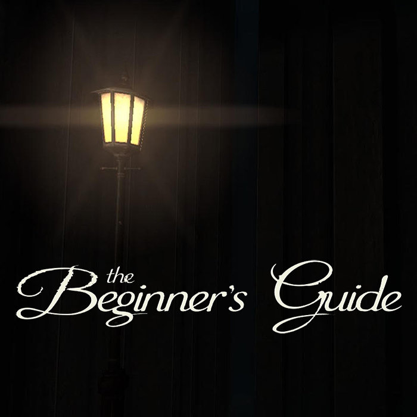
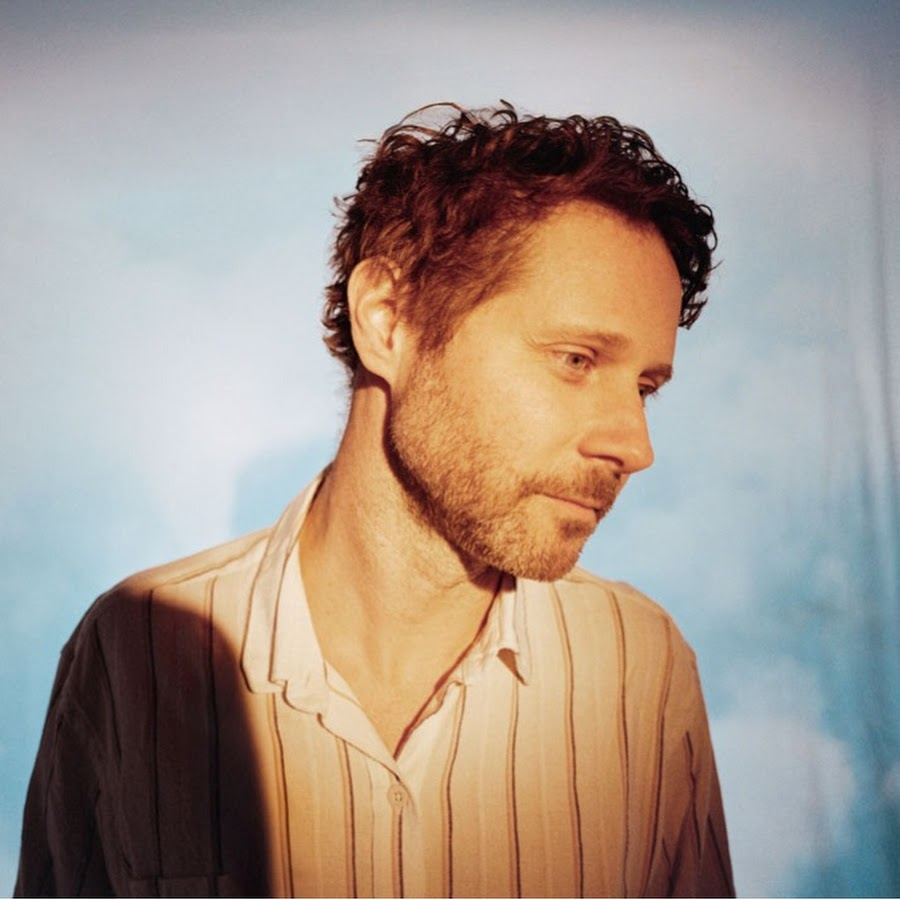
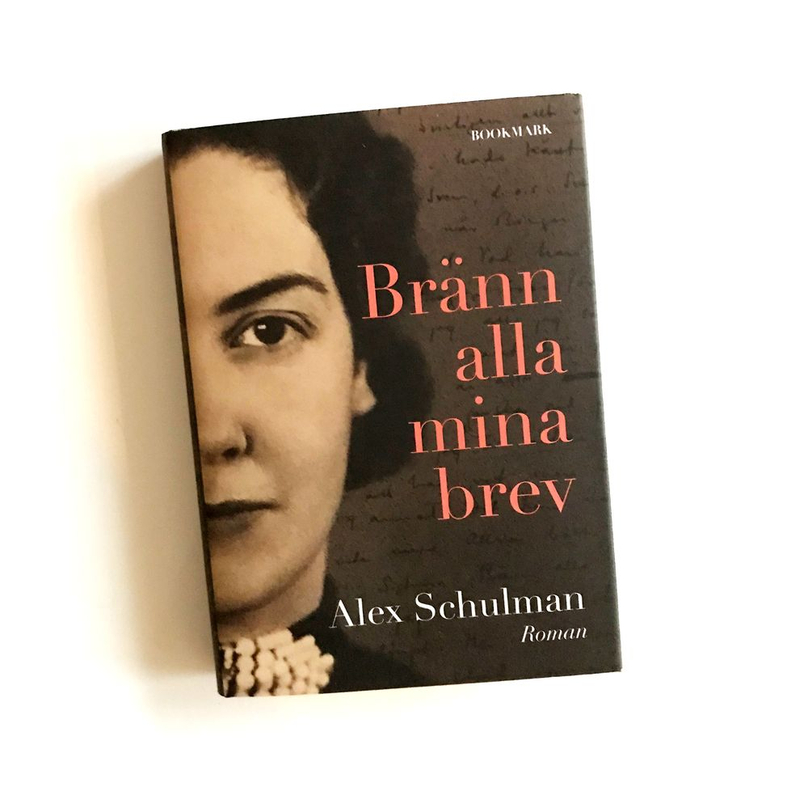
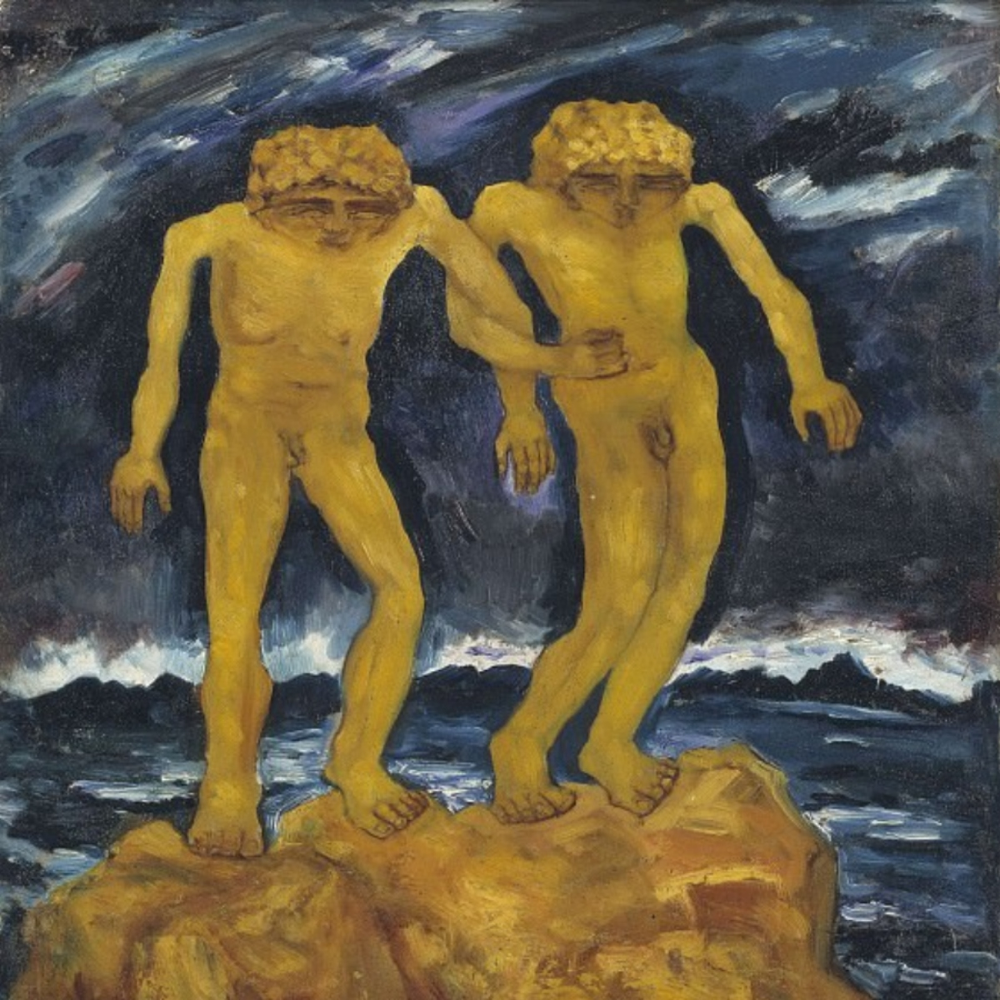

favorite things
this section is inspired by Dave Booda's me page.
this is currently my favorite poem
it is a love poem written by Ron Padgett, my favorite poet. this poem featured in Jim Jarmusch's movie paterson, featuring Adam Driver. a very good movie, i recommend watching it!this is currently my favorite show
a really funny HBO comedy show, with great music, about a bunch of nerds desperately trying to run a sillicon valley based company.

this is currently my favorite computer game
a clever interactive visual novel, by creator of Stanley Parable. i won't spoil much, play it!


this is currently my favorite book
it is a book by Alex Schulman, about a love affair between his married grand mother and a famous swedish author.

this is currently my favorite art piece
i stumbled upon this at a museum in stockholm and i just love it!